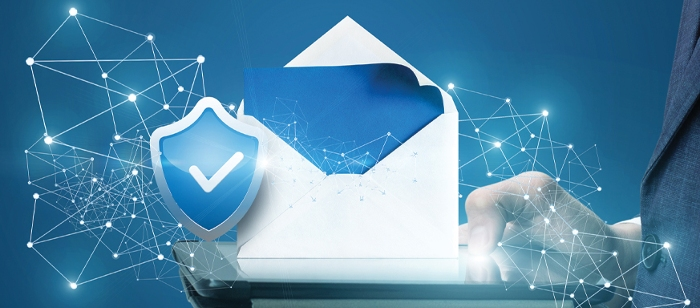

With the rise of email as the preferred mode of communication, it's no wonder that email security is becoming more and more important. MSPs are no exception, and email security is an important talking point for Managed Service Providers (MSPs).
Managed service providers (MSPs) are used as needed worldwide by businesses in the present-day. Email processes and marketing campaigns are a huge part of the typical work of an MSP. Due to this, the rampant increase in email scams and attacks has become a subject that MSPs need to take note of. In fact, research has shown that attackers are more likely to target MSPs.
Managed Service Providers (MSPs) offer one-stop solutions that handle a great deal of tasks throughout a company's operations. They act as a great addition to a crew due to their ability to handle the responsibilities that are neglected and shield businesses against electric attacks.

Staying up to date on email safety in corporations is just as important a preventative measure as safety. Organizations could address this by educating workers how to recognize suspicious emails and discouraging them from opening these emails to this publication. Nevertheless, malicious emails can still get through, and businesses that observe such emails can suffer the consequences.
It's critical to take the security of email services seriously and use AI and machine learning to help address this problem and prevent harmful assaults. The solutions to these attacks are still going to come, but the steps taken beforehand will be more effective with a security specialist equipped to manage it.
It's not simply that security has become a focus of MSPs; it's also a major reason why these businesses have become so security-centered. An increasing amount of security threats and scams in the business world have made it typical for MSPs to offer security solutions. But this evolution has also made the MSPs carefully scrutinize the services they provide.
The cybersecurity landscape is constantly updating, altering, and getting torn up. MSPs should be aware of the various cybersecurity threats that have evolved in recent times, including email scams.
MSPs have almost unrestricted access to their client networks, business software, and amenities like they wish. This and far reaching access allows MSPs to complete their duties efficiently. However, this can function as a big entryway for hackers, too.
Because some open-source applications are often MSP, that helps enable many forms of online attacks. Sadly, this also makes it more likely that MSP service implements that kind of application. That's why MSP protection has to be airtight and regularly monitored; unfortunately, that isn't a common practice with email.
Today, email security plays a critical role for all clients, including MSPs. Since scam emails abound much in correspondence, this vulnerability email exposes represents a notable risk for these customers. It is therefore important for these users to safeguard their emails to ensure that their sensitive data stays safe.
Taking security precautions is vital for the safety of yourself and your customers. As an MSP, you essentially have many businesses that are dependent on your web presence rather than just your own. Thus, it's even more crucial that you secure your internet presence from attackers to protect you.
In summary, Email security has become a top priority for MSPs as they balance the competing demands of their clients' needs against their own risk. Today, most MSPs can offer their clients some degree of email protection, but many of them lack the tools and resources needed to offer comprehensive email security. Email security has become a crucial piece of the MSP's security toolbox.